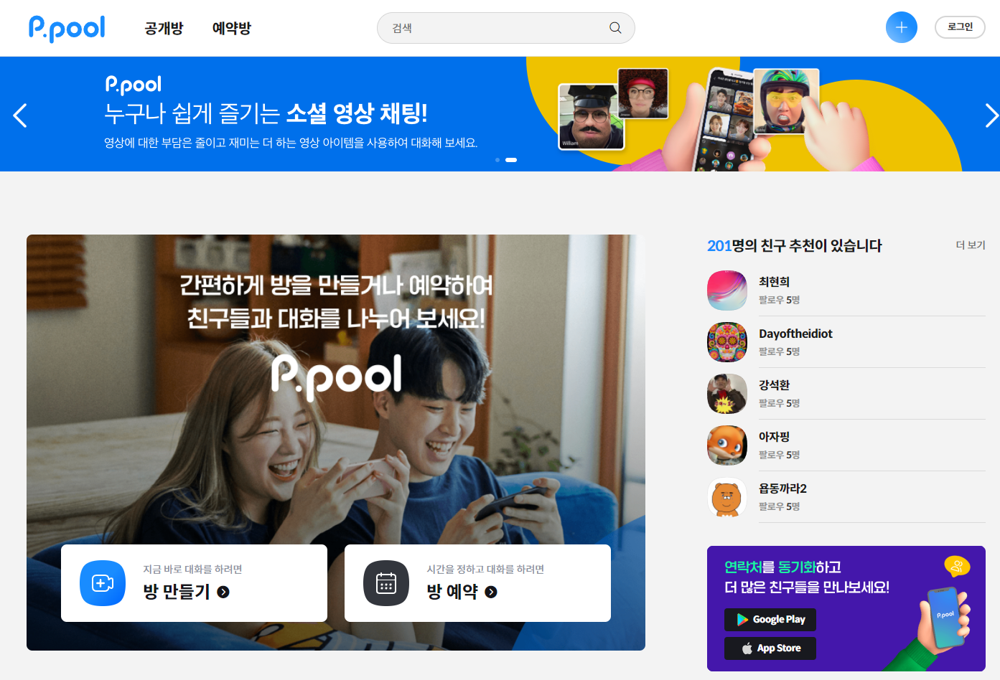
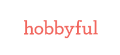

| 프로젝트명 | 회사명 | 역할 | 사용기술 & 설명 |
|---|---|---|---|
| 접속OS | - | ||
| 계단 각도 구하기 | - | 계단 각도 구하기 |
https://limssong.github.io/stairsAngle/ 계단 각도 구하기 reactJS 이용하여 밑변과 높이값을 입력시 빗변과 밑변 사이각 구하기 |
| 명품커머스 발란 | 발란 | 명품 커머스 발란 마크업 & FE개발 |
https://www.balaan.co.kr/ 명품 커머스 발란 마크업 & FE개발 sass / nuxt.js / vue.js / node / 제플린 / git |
| ABC마트 | ABC마트 | ABC마트 퍼블리싱 |
https://abcmart.a-rt.com/ ABC마트 퍼블리싱 svn / html / css / photoshop / j-query |
| 다중 화상 대화 플랫폼 ppool | 스마일게이트 스토브 | 다중 화상 대화 플랫폼 ppool 마크업 개발 |
https://ppool.onstove.com/ 다중 화상 대화 플랫폼 ppool 마크업 개발 (위 url은 라이브 페이지 - pw : 9001) sass / nuxt.js / vue.js / node / 제플린 / git |
| 구인구직 벼룩시장 모바일 메인 | (주)미디어윌 | 구인구직 벼룩시장 모바일 메인 UI개편 |
http://m.findjob.co.kr/ 구인구직 벼룩시장 모바일 메인 UI개편 (위 url은 라이브 페이지) |
| 구인구직 벼룩시장 PC 메인 | 구인구직 벼룩시장 PC 메인 UI개편 |
http://www.findjob.co.kr/ 구인구직 벼룩시장 PC 메인 UI개편 (위 url은 라이브 페이지) |
|
| 구인구직 벼룩시장 모바일 취업가이드 | 구인구직 벼룩시장 모바일 취업가이드 UI개편 |
http://m.findjob.co.kr/JobGuide/ 구인구직 벼룩시장 모바일 취업가이드 UI개편 (위 url은 라이브 페이지) |
|
| 골프존 코칭 아카데미 | (주)골프존 | 골프존 ACADEMY |
https://coachingacademy.golfzon.com/ 골프존 코칭 아카데미 웹 / 모바일 UI개발 (위 url은 라이브 페이지) |
| 골프존 모바일 GS | 골프존 모바일 GS |
http://m.golfzon.com/ 골프존 모바일 GS 운영 (위 url은 라이브 페이지) |
|
| 골프존 모바일 GDR | 골프존 모바일 GDR |
https://gdracademy.com/ 골프존 모바일 GDR 운영 (위 url은 라이브 페이지) |
|
| 13인치 모바일 | (주)칸그림 | (주)칸그림 자체서비스 13인치 UI개발 |
http://m.13inch.co.kr/ (주)칸그림 자체서비스 13인치 UI개발 폐업으로 포트폴리오에서 확인가능 |
| 태극기 | 자체제작 | 그려보기 - 태극기 | 개인적으로 html과 css로 그려본 태극기 - 2018.02.25 |
| CJamll | CJ오쇼핑 | CJ mall 내 UI개발 | CJ mall 내 UI개발 |
| hobbyful | (주)코드크래프트 | hobbyful 사이트 UI 개발 |
http://hobbyful.co.kr/ 취미를 쉽게 배우자는 hobbyful 사이트 UI개발 (위 url은 라이브 페이지) responsible Web. 미디어쿼리 사용으로 웹 / 모바일 대응 |
| 피팅라운지 App | (주)뷰리플 | 피팅라운지 App UI개발 | 편집샵 앱이 아닌 라운지에프의 서비스인 피팅서비스만 가능한 ‘피팅라운지’ 하이브리드앱 UI개발. 폐업으로 런칭못함 |
| 라운지에프 | 라운지에프 UI개발 |
http://loungef.kr 입어보고 구매하는 편집샵 라운지에프 UI개발 responsible Web. 미디어쿼리 사용으로 웹 / 모바일 대응 메인 / 상품리스트 / 상품상세 / 결제단계 / 마이페이지등 서비스중인 모든 페이지 UI개발. 그로스해킹 관련하여 수정 & 적용 & 운영 폐업으로 포트폴리오에서 확인가능 |
|
| 라운지에프 어드민 | 라운지에프 어드민 UI개발 |
입어보고 구매하는 편집샵 라운지에프 어드민 UI개발 폐업으로 포트폴리오에서 확인가능. |
|
| 뷰리플 리뉴얼 2차 | 뷰리플 리뉴얼 2차 UI개발 |
http://www.viewreple.com responsible Web. 미디어쿼리 사용으로 웹 / 모바일 대응 메인페이지 / 리스트 / 뷰 / 글쓰기 / 마이페이지 등 전체 페이지 리뉴얼 UI개발 폐업으로 포트폴리오에서 확인가능 |
|
| 뷰리플 회사홈페이지 | 뷰리플 회사홈페이지 UI개발 |
http://www.viewreple.co.kr responsible Web. 미디어쿼리 사용으로 웹 / 모바일 대응 전 페이지 UI개발 폐업으로 포트폴리오에서 확인가능 |
|
| 소셜보팅 | 소셜보팅 UI개발 |
사용자로 하여금 A vs B 상품을 투표하여 소비자 반응도 조사하고 쿠폰발급으로 구매까지 독려하는 카페24 앱 UI개발 유료앱으로 런칭하였으나 대 실패 |
|
| 소셜리뷰 | 소셜리뷰 UI개발 |
리뷰 작성 도구인 소셜리뷰 UI개발 어느 사이트나 쉽게 삽입하여 리뷰작성할 수 있도록 도와주는 툴 당시 카페24 무료앱 탑3 |
|
| New 소셜리뷰 바로가기 | New 소셜리뷰 UI개발 | ||
| 피파온라인3 정보공유(웹) | 학교선배 - 프리렌서 작업 | 피파온라인3 정보공유 웹 UI개발 | 피파온라인3 정보공유 페이지 웹버젼 UI개발 |
| 피파온라인3 정보공유(모바일) | 피파온라인3 정보공유 모바일 UI개발 | 피파온라인3 정보공유 페이지 모바일버젼 UI개발 | |
| EasyCall | 자체제작 | EasyCall 개발 | 개인적으로 제작해본 쉽게 전화걸기 웹앱 |
| 네이트 검색면 컨텐츠 | (주)SK Communications | 네이트 검색면 컨텐츠 토픽 UI개발 |
단위환산 / 환율 / 계산기 / 증권 / 해외증시 / 올림픽 토픽 UI개발 2012.04 총선 토픽 UI개발 : 선거구 찾기 지도 서비스 포함된 총선 토픽 UI개발 |
| 회원빌링 | 네이트 회원빌링 UI개발 |
네이트 회원빌링 UI개발 서비스 종료로 포트폴리오 없음. |
|
| 사이좋은 세상 | 사이좋은 세상 UI개발 |
사이좋은 세상 UI개발 서비스 종료로 포트폴리오 없음. |
|
| 소셜광고 | 소셜광고 UI개발 | 소셜광고 UI개발 | |
| DA광고 | DA광고 UI개발 | DA광고 UI개발 | |
| SK Communications 회사소개 페이지 바로가기 | SK Communications 회사소개 페이지 UI개발 | SK Communications 회사소개 페이지 UI개발 | |
| 이벤트 프로모션 | 이벤트 프로모션 UI개발 |
이벤트 프로모션 페이지 UI개발 포트폴리오 없음. |
|
| 사내 그룹웨어 | 사내 그룹웨어 UI개발 |
사내 그룹웨어 UI개발 외부유출 금지로 포트폴리오 없음. |
|
 reactJS 이용하여 밑변과 높이값을 입력시 빗변과 밑변 사이각 구하기-
reactJS 이용하여 밑변과 높이값을 입력시 빗변과 밑변 사이각 구하기-- 명품 커머스 발란 마크업 & FE개발Balaan
- ABC마트 퍼블리싱ABC마트
- ppool 반응형 마크업 개발스마일게이트 스토브
- 구인구직 벼룩시장 모바일 메인 UI개편구인구직 벼룩시장
- 구인구직 벼룩시장 PC 메인 UI개편구인구직 벼룩시장
- 구인구직 벼룩시장 모바일 취업가이드 UI개편구인구직 벼룩시장
- 골프존 코칭 아카데미 UI개발골프존
 골프존 앱 UI개발골프존
골프존 앱 UI개발골프존- 골프존 모바일 GS 운영골프존
- 골프존 모바일 GDR 운영골프존
- 13인치 자체 서비스 13인치 UI개발(주)칸그림
- 태극기개인적으로 html과 css로 그려본 태극기 - 2018.02.25
- CJ mall 내 UI개발CJ오쇼핑
- 취미를 쉽게 배우는
hobbyful (Responsible Web)(주)코드크레프트 - 입어보고 구매하는 편집샵
LOUNGE.F (Responsible Web)(주)뷰리플 - 입어보고 구매하는 편집샵
LOUNGE.F 어드민 페이지(주)뷰리플 - 뷰리플 회사홈페이지 바로가기 (Responsible Web)(주)뷰리플
- 모든 리뷰를 모아보자.
뷰리플 리뉴얼버젼 바로가기 (Responsible Web)(주)뷰리플 - 모든 리뷰를 모아보자.
뷰리플 바로가기(주)뷰리플 - 모든 리뷰를 모아보자.
뷰리플 모바일 바로가기(주)뷰리플 - easyCall 바로가기개인 jquery mobile 프로젝트
- 소셜보팅 예제 보러가기(ie9이상)(주)뷰리플
- 소셜리뷰 바로가기(주)뷰리플
- NEW 소셜리뷰 바로가기(주)뷰리플
- 네이트 검색면 컨텐츠(주)SK Communications
- SK Communications 회사 소개페이지 바로가기(주)SK Communications
- 네이트 디스플레이광고(주)SK Communications
- 피파온라인3 정보공유(웹)프리렌서 작업
- 피파온라인3 정보공유(모바일)프리렌서 작업
- 폰트 조합